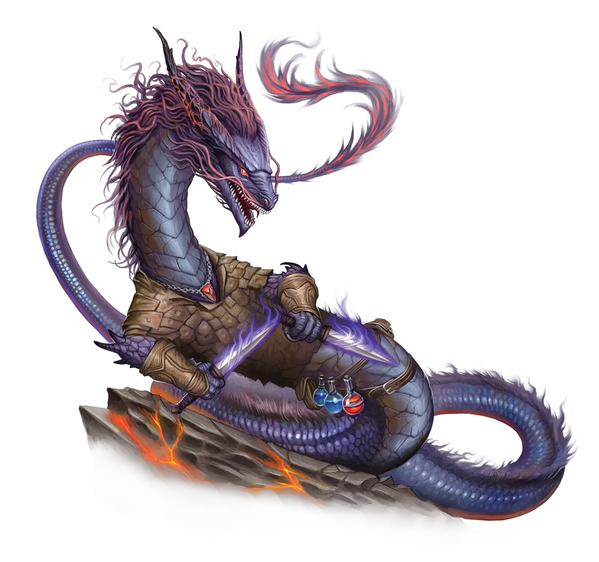

冥界炼金术
冥界龙类从事的炼金术颇为奇特，超越了这门奇异科学的基本信条，将元素技术与基于场所的风水术融入其中。诸如冥界龙宝库和实验室的确切配置与摆放位置等，对冥界龙炼金师来说非常重要，它们认为这些因素会影响实验结果。依我之见，化学反应要么成功要么失败，不应该取决于你在一间房间里放置某张挂毯的确切位置。不过话说回来，我想炼金术从一开始就不仅仅是化学。
冥界龙 Underworld Dragon |
|
|
冥界龙类花费大量时间用宝石和珍贵矿物打造自己的宝库，或是研究炼金术与魔法之间的相互作用，所以表面上看来，它们似乎并不太需要执行永恒之光仪式。然而，冥界龙类中日益壮大的一个流派开始相信，仪式的作用方式――扰乱龙体内部固有的炼金术与魔法流动――只有另一条冥界龙才能发现。因此，相当数量的冥界龙类出于自豪感，或为了研究并尝试通过亲身体验来更深入地了解仪式，纷纷投身于这个仪式之中。它们推测，自己对炼金试剂和魔法催化剂的先天理解，将使它们能够在感受仪式效应流经自身魔法时分析这些效应。迄今为止，还没有任何冥界龙能够破解仪式的秘密，但这当然不会阻止更多冥界龙尝试它。冥界龙类的家族群体和研究圈往往鼓励各种大胆的实验，而非抵制鲁莽的危险行为，因此即使是认为永恒之光仪式有风险或得不偿失的传统冥界龙，通常也会尊重它们永恒同胞们推进魔法科学的尝试。话虽如此，如果永恒冥界龙在仪式后的汲能状态下虚弱不堪，无法履行对家族或同伴群体的责任，那么这种执行不力可能会引发紧张和怨恨。 永恒冥界龙特别喜欢加入由非冥界龙的永光龙类组成的群体，因为这能让它们秘密收集盟友的数据，尝试确定不同龙类对仪式的反应有何差异，从而比仅凭自己作为测试对象时更好地理解仪式。不过，如果没有其他永光龙类可用，它们也不会轻视与其他种族的交往。对永恒冥界龙而言，冒险是一场宏大的实验，它们喜欢尝试新的战术、策略和技巧，看看哪种最有效。通过这种方式，它们感到自己能够成长并拓展思维，同时借助仪式的帮助锻炼并迅速提升自己的魔法。能够忍受龙类不断进行实验并将他人视为测试对象的冒险队伍，会发现冥界龙是极其有用、灵活且适应性强的盟友。然而，最好让冥界龙优先挑选宝石或矿物宝藏，因为没有什么比一位同伴冒险者要求获得此类宝藏更能激起它们的怒火，尤其是当冥界龙感觉与其有炼金亲缘并心有所属时。 冥界龙最常成为涉足炼金术的施法者，如工匠、德鲁伊或法师。 冥界炼金术 冥界龙类从事的炼金术颇为奇特，超越了这门奇异科学的基本信条，将元素技术与基于场所的风水术融入其中。诸如冥界龙宝库和实验室的确切配置与摆放位置等，对冥界龙炼金师来说非常重要，它们认为这些因素会影响实验结果。依我之见，化学反应要么成功要么失败，不应该取决于你在一间房间里放置某张挂毯的确切位置。不过话说回来，我想炼金术从一开始就不仅仅是化学。 冥界龙特质 Underworld Dragon Traits 你出身于一脉天生精通炼金术与聚敛矿藏的冥界龙世系。 |
  |